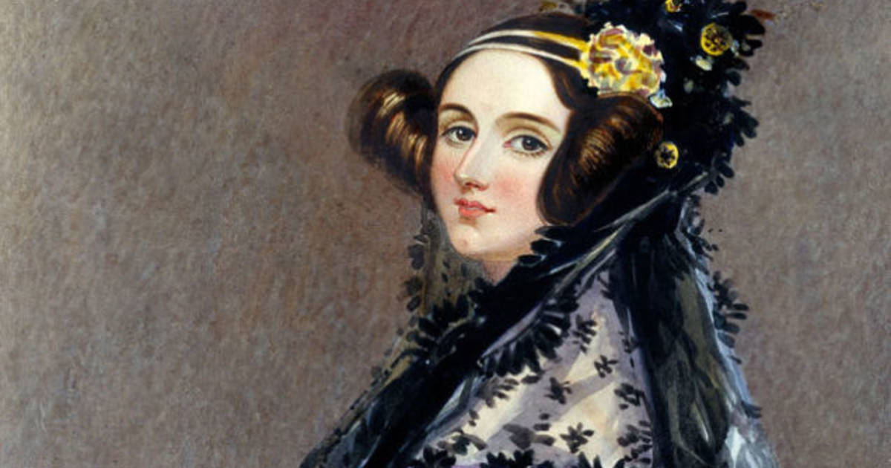

FabLab

La fablab ouvre ses portes le 30 janvier
Un fab lab (contraction de l'anglais fabrication laboratory, « laboratoire de fabrication ») est un lieu ouvert au public où il est mis à sa disposition toutes sortes d'outils, notamment des machines-outils pilotées par ordinateur, pour la conception et la réalisation d'objets.
Histoire

La fablab ouvre ses portes le 30 janvier
Ada Lovelace, de son nom complet Augusta Ada King, comtesse de Lovelace, née Ada Byron le 10 décembre 1815 à Londres et morte le 27 novembre 1852 à Marylebone dans la même ville, fille de Lord Byron, est une pionnière de la science informatique. Elle est principalement connue pour avoir réalisé le premier programme informatique, lors de son travail sur un ancêtre de l'ordinateur : la machine analytique de Charles Babbage.
Dans ses notes, on trouve en effet le premier algorithme publiéWoolley 1, destiné à être exécuté par une machine, ce qui fait considérer Ada Lovelace comme « le premier programmeur du monde »1. Elle a également entrevu et décrit certaines possibilités offertes par les calculateurs universels, allant bien au-delà du calcul numérique et de ce qu'imaginaient Babbage et ses contemporains